Etapa 1
Na Etapa 1 pode ser criado um novo cenário ou selecionar um cenário já existente.
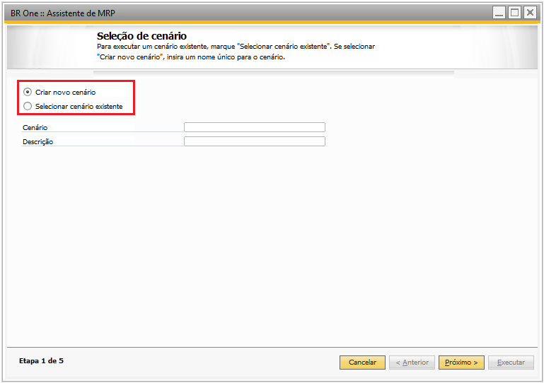{kind=link}
Para criar um novo cenário, basta deixar o campo ‘Criar um novo cenário’ selecionado, assim, informe os campos ‘Cenário’, ‘Descrição’ e clique em ‘Próximo’.
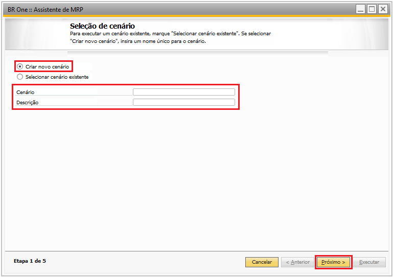{kind=link}
Desta forma, um novo cenário será adicionado e o usuário irá para a ‘Etapa 2’ do ‘Assistente de MRP’.
Para selecionar um cenário existente, escolha a opção ‘Selecionar cenário existente’, escolha o cenário desejado e clique em ‘Próximo’.
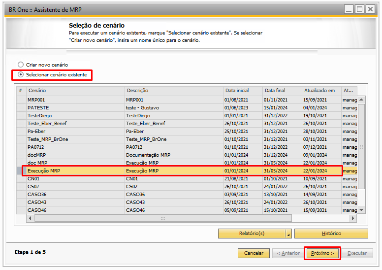{kind=link}
Assim, o usuário irá para a ‘Etapa 2’ do ‘Assistente de MRP’.
Ainda na Etapa 1 é posível também acessar o histórico dos MRPs já executados, basta selecionar o cenário desejado e clicar no botão ‘Histórico’.
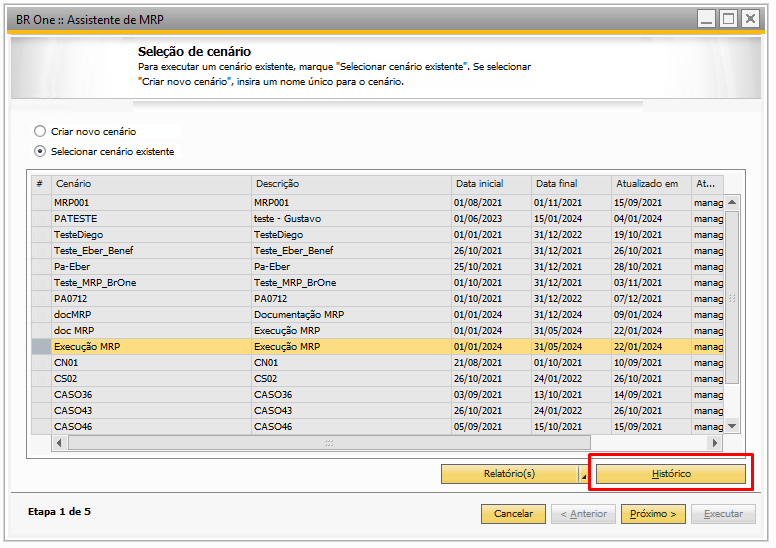{kind=link}
Com isso, será aberta a tela de ‘Histórico’, onde será mostrado o histórico de execuções do ‘Assistente de MRP’ para o cenário escolhido.
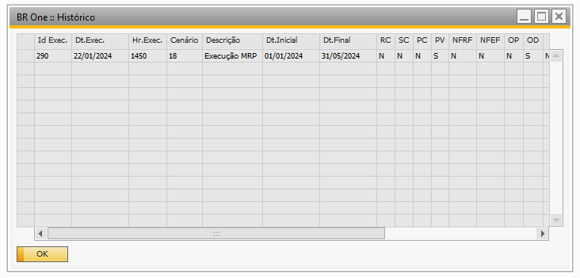{kind=link}
Se o usuário der dois cliques na linha desejada, será mostrado o resultado da execução do MRP, conforme data escolhida no histórico.
Caso o usuário tente processar alguma recomendação proveniente do histórico, a seguinte mensagem será exibida:
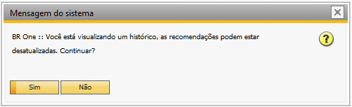{kind=link}
BR One :: Você está visualizando um histórico, as recomendações podem estar desatualizadas. Continuar?
Caso o usuário clique em ‘Sim’, as recomendações serão processadas, caso clique em ‘Não’, o processo será cancelado.
Exclusão de histórico MRP
É possível realizar a exclusão de todo o histórico de MRP. Para realizar essa exclusão deve-se acessar a tela ‘BR One :: Exclusão de histórico de MRP’, ela é encontrada através do caminho abaixo:
Ajuda -> Support Desk -> Restaurar -> BR One -> BR One Produção : Exclusão de histórico de MRP
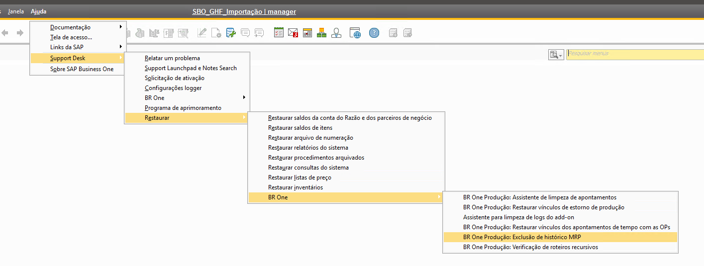{kind=link}
{kind=link}
Obs.: Essa tela não é encontrada através do menu de busca do SAP.
Na tela ‘BR One :: Exclusão de histórico de MRP’, há os campos e botões abaixo:
Cenário: seleciona o cenário do qual irá excluir o histórico de MRP.
Nome: Indica o nome do cenário escolhido.
Data de execução até: Indica até qual data deseja realizar a exclusão.
Remover: Botão que realiza a exclusão do histórico do MRP para o cenário escolhido.
Cancelar: Botão fecha tela.
Obs.: Importante salientar que a exclusão é irreversível.
No exemplo abaixo o ‘Assistente de MRP’ possui dois cenários criados, o ‘MRP’ e o ‘MRP 02’, onde para há diversos históricos de execução para o cenário ‘MRP’:
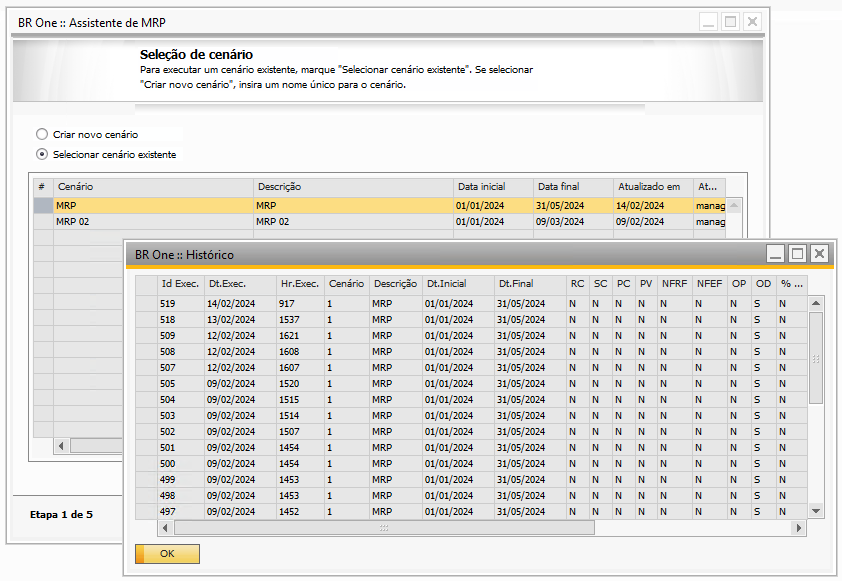{kind=link}
No campo ‘Cenário’ da tela ‘BR One :: Exclusão de histórico de MRP’, foi escolhido o cenário MRP:
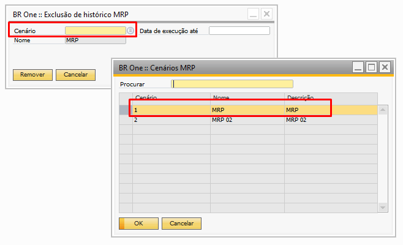{kind=link}
Para o campo de data, é possível definir um limite para exclusão, ao analisar as datas de execução para o cenário escolhido através do histórico, basta informar a data escolhida no campo, em nosso exemplo foi escolhido a data 09/02/2024:
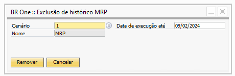{kind=link}
Dessa forma, ao clicar em ‘Remover’ o sistema retornará a mensagem abaixo:
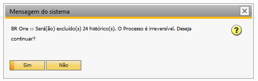{kind=link}
Ao clicar em ‘Sim’ confirmará a exclusão dos históricos que tenham a data até o dia informado, ao clicar em ‘Não’ processo será cancelado. Ao finalizar o processo de exclusão do histórico, o add-on irá retornar a seguinte mensagem no rodapé:
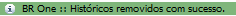{kind=link}
BR One :: Históricos removidos com sucesso.
Ao abrir a tela de histórico, podemos ver que todos os históricos com data de execução até o dia escolhido, em nosso exemplo o dia 09/02/2024, foram excluídos.
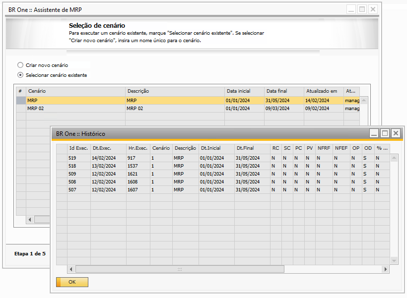{kind=link}